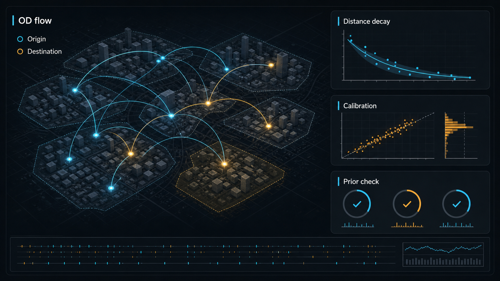
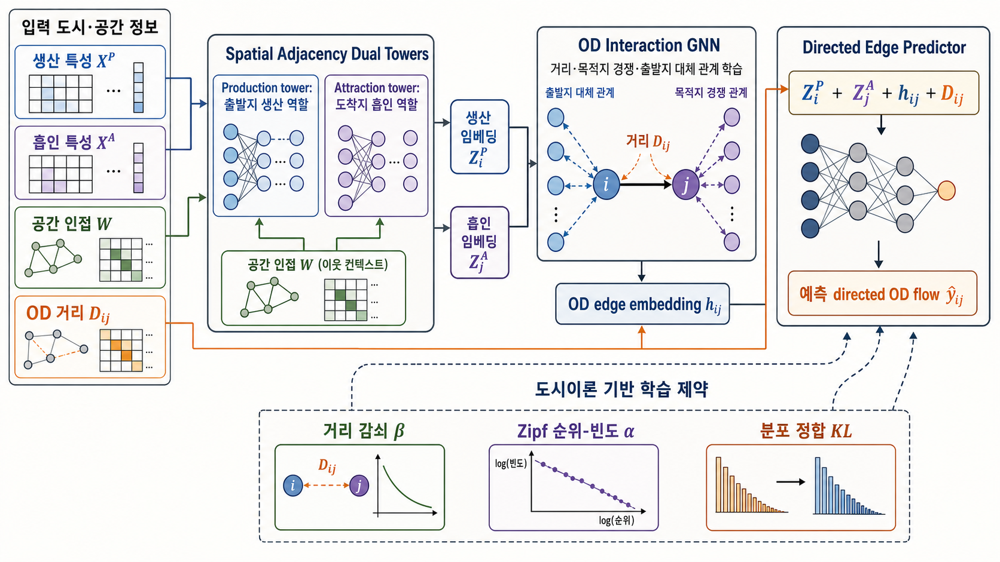

도시 데이터는 쉽게 그래프로 바뀐다. 지역은 노드가 되고, 이동은 엣지가 된다. 상권과 시설, 교통 접근성도 조금만 추상화하면 네트워크처럼 보인다. 그래서 도시 AI를 만들 때 흔히 이런 생각을 하게 된다.
“도시 데이터는 그래프니까 GNN을 쓰면 되지 않을까?”
그런데 실제 문제는 조금 다르다. 그래프 모델을 썼다고 해서 모델이 도시를 이해하는 것은 아니다. 출발지와 도착지의 역할이 다르고, 가까운 이동과 먼 이동의 의미가 다르며, 중심지와 주변부의 위계가 다르다. 이 차이를 모델 구조와 학습 목표 안에 넣지 않으면, 예측값은 그럴듯해 보여도 도시적으로 설명하기 어려운 결과가 나올 수 있다.
최근 읽은 논문 「Theory-informed and interpretable graph learning for urban commuting flows」는 이 문제를 잘 보여준다. 논문이 제안하는 PIG-GNN은 통근 OD flow를 예측하기 위한 그래프 신경망이다. 다만 흥미로운 점은 “새로운 GNN 모델” 자체보다, 도시 이론을 모델의 어느 층에 넣었는가에 있다.
이 글에서는 논문을 하나의 사례로 삼아, 도시 AI에서 domain prior가 왜 필요한지 정리해보려 한다. 특히 도시연구 관점에서는 이 논문을 “GNN 성능 개선”보다 “도시 현상을 어떤 단위와 관계, 검증 기준으로 모델 안에 번역할 것인가”라는 문제로 읽는 편이 더 중요하다. 핵심은 간단하다.
도시 AI에서 중요한 질문은 “GNN을 썼는가”가 아니라 “도시 이론을 모델의 어디에 넣었는가”다.

도시 데이터는 그래프지만, 그래프만으로는 부족하다
도시 이동을 예측하는 모델은 오래전부터 있었다. 대표적으로 gravity model은 두 지역 사이의 이동량을 출발지의 생산력, 도착지의 흡인력, 두 지역 사이의 거리 저항으로 설명한다. 직관적으로도 자연스럽다. 사람이 많이 사는 곳에서 더 많은 이동이 발생하고, 일자리나 시설이 많은 곳으로 더 많이 향하며, 거리가 멀수록 이동은 줄어든다.
GNN은 여기에 더 유연한 표현을 제공한다. 지역 간 인접성, 실제 이동이 발생한 OD 관계, 주변 목적지와의 경쟁 관계를 학습할 수 있다. 하지만 이 유연성에는 위험도 있다. 모델이 예측 오차를 줄이는 방향으로 학습하더라도, 그 예측이 도시적으로 말이 되는지는 별개의 문제이기 때문이다.
예를 들어 출발지와 도착지를 같은 종류의 노드 embedding으로 처리하면 어떤 일이 생길까. 같은 지역이라도 “사람을 내보내는 힘”과 “사람을 끌어들이는 힘”은 다르다. 주거지가 강한 지역과 업무지가 강한 지역은 같은 위치에 있더라도 다른 역할을 한다. 이 차이를 하나의 표현으로 뭉개면 예측은 어느 정도 될 수 있지만, 설명은 약해진다.
거리도 마찬가지다. “가깝다/멀다”는 단순한 숫자가 아니다. 통근에서는 거리 감쇠가 있고, 생활권 이동과 광역 이동은 다른 스케일에서 작동하며, 실제 이동에서는 교통망과 환승 저항이 중요하다. 도시연구에서 공간 단위와 거리 정의가 바뀌면 관찰되는 패턴도 달라진다. 모델이 거리 정보를 입력으로 받는 것만으로는 충분하지 않다. 예측된 이동 분포가 실제 도시의 거리 감쇠 패턴과 얼마나 맞는지도 봐야 한다.
이 지점에서 domain prior가 필요해진다. domain prior는 모델을 낡은 규칙에 가두는 장치가 아니다. 오히려 도시적으로 말이 안 되는 예측을 걸러내는 검증 경계에 가깝다.
PIG-GNN이 넣은 세 가지 도시 prior
PIG-GNN의 구조를 단순화하면 세 가지 장치가 눈에 띈다.
첫째, origin과 destination을 분리한다. 논문은 production tower와 attraction tower를 따로 두어 출발지의 생산 역할과 도착지의 흡인 역할을 구분한다. 출발지는 사람을 내보내고, 도착지는 사람을 끌어들인다. 이 둘을 같은 embedding으로 처리하지 않는 것이 출발점이다.
둘째, 공간 인접 그래프와 OD 상호작용 그래프를 함께 쓴다. 가까이 붙어 있는 지역의 관계와 실제 이동이 발생하는 지역 쌍의 관계는 다르다. 인접 그래프는 공간 맥락을 담고, OD graph는 이동 상호작용을 담는다. 특히 OD edge message passing은 목적지 간 경쟁이나 출발지 간 대체 관계를 학습하도록 설계된다.
셋째, physics-informed loss를 넣는다. 여기서 physics-informed라는 표현은 엄밀한 물리 법칙이라기보다, 도시 이동에서 반복적으로 관찰되는 scaling regularity를 학습 목표에 반영한다는 의미로 읽는 편이 안전하다. 논문은 distance-decay slope, Zipf rank-frequency, flow distribution prior를 soft constraint로 넣는다. 즉 모델은 정답과의 오차만 줄이는 것이 아니라, 예측 분포가 도시 이동의 기본 패턴에서 크게 벗어나지 않는지도 함께 맞춘다.
이 구조는 도시 AI 설계에서 중요한 전환을 보여준다.
정확도만 보는 모델은 “얼마나 맞혔는가”를 묻는다. domain prior를 넣은 모델은 여기에 “도시적으로 말이 되는 방식으로 맞혔는가”를 추가로 묻는다.
정확도보다 중요한 것은 검증 가능한 예측이다
논문 결과를 읽을 때도 이 구분이 중요하다. PIG-GNN은 주요 H2W 통근 benchmark에서 deployable baseline 중 낮은 RMSE와 높은 CPC를 보인다. 하지만 “모든 지표에서 압도적인 1등”이라고 쓰면 정확하지 않다. 논문 안에서도 doubly-constrained gravity model은 일부 지표에서 더 높은 값을 보인다. 다만 이 모델은 관측된 origin/destination marginal을 hard constraint로 사용하기 때문에, 현실적인 forecasting baseline이라기보다 upper-bound reference에 가깝다.
그래서 이 논문의 장점은 단순한 SOTA 서사가 아니다. 더 중요한 점은 oracle-like marginal constraint 없이도 예측 오류, calibration, scaling-law fidelity를 함께 관리하려 했다는 데 있다.
도시 모델에서 이 차이는 꽤 크다. RMSE가 낮은 모델이라도 장거리 이동을 과대평가하거나, 생활권 내부 이동을 부드러운 평균으로 눌러버리거나, 중심지 위계를 흐리게 만들 수 있다. 반대로 약간의 오류 trade-off를 감수하더라도 거리 감쇠와 이동 분포의 long-tail을 더 잘 보존하는 모델이 도시계획적 해석에는 더 유용할 수 있다.
논문이 보여주는 Figure 12의 bimodal regime도 이 점과 연결된다. 예측된 OD flow는 low-flow/intercity cluster와 high-flow/intracity cluster로 나뉜다. 저자들은 이를 sparse, long-range inter-urban mobility와 dense, short-range intra-urban mobility의 차이로 해석한다. 하나의 평균적 OD 법칙으로 모든 이동을 설명하기보다, 생활권 내부 이동과 광역 이동이 다른 regime을 가진다는 점을 보여주는 셈이다.
도시연구로 읽으면 이 대목이 특히 중요하다. 좋은 도시 모델은 모든 이동과 접근성을 하나의 평균 법칙이나 하나의 점수로 합치기 전에, 단거리 생활권 이동과 장거리 광역 이동이 다른 메커니즘으로 작동한다는 점을 분리해서 봐야 한다. 이는 단순한 모델 성능 문제가 아니라, 어떤 도시 현상을 같은 현상으로 묶고 어떤 현상은 다른 regime으로 나눌 것인가의 문제에 가깝다.
도시연구에서 counterfactual이라는 말에 조심해야 한다
논문은 production feature와 attraction feature를 변화시켜 모델 반응을 확인하는 counterfactual analysis도 제시한다. 예를 들어 production feature를 높였을 때 predicted flow가 증가하는 식이다. 이 분석은 모델이 origin/destination 역할을 어느 정도 분리해서 배웠는지 확인하는 진단으로 유용하다.
다만 이걸 정책 효과나 투자 효과로 읽으면 안 된다. 논문도 이 perturbation이 causal identification claim이 아니며, 극단적인 multiplier는 out-of-distribution input이 될 수 있다고 밝힌다.
이 경계는 공개 글이나 제품 설명에서 특히 중요하다. “이 시설을 늘리면 이동이 몇 퍼센트 증가한다” 같은 문장은 인과효과처럼 읽힌다. 하지만 이 논문에서 말할 수 있는 것은 그보다 좁다. 특정 입력 변화에 대해 모델 내부 예측이 어떤 방향으로 반응하는지 확인했다는 정도다.
도시연구에서도 마찬가지다. 어떤 정책이 이동을 늘린다, 어떤 시설 배치가 상권을 바꾼다, 어떤 입지 조건이 성과를 만든다고 단정하려면 별도의 식별 전략이 필요하다. 이 논문에서 더 안전하게 가져올 수 있는 것은 인과효과가 아니라, 모델이 도시 이론에 비춰 기대 가능한 방향으로 반응하는지 확인하는 진단적 사용법이다.
도시 AI의 핵심 질문: prior를 어디에 넣을 것인가
PIG-GNN을 읽고 남는 질문은 하나다.
도시 이론을 모델의 어디에 넣을 것인가?
입력 feature에 넣을 수도 있다. 예를 들어 거리, 시간, 접근성, POI, 인구, 토지이용 같은 변수를 도시 개념의 proxy로 설계하는 방식이다. 모델 구조에 넣을 수도 있다. origin/destination 역할을 분리하거나, 공간 인접 그래프와 OD graph를 구분하는 식이다. loss에 넣을 수도 있다. 거리 감쇠, rank-frequency, long-tail distribution을 soft constraint로 반영하는 방식이다. evaluation에 넣을 수도 있다. RMSE뿐 아니라 calibration, CPC, scaling-law fidelity, 거리대별 오류, 생활권/광역권 regime 보존 여부를 함께 보는 것이다.
이 네 층을 나누면 도시 AI의 설계 질문이 더 선명해진다.

| 층 | 질문 | 예시 |
|---|---|---|
| 입력 | 어떤 도시 개념을 proxy로 쓸 것인가 | 노동력, POI, 접근성, 중심성, 토지이용 |
| 공간 단위 | 어떤 스케일에서 현상을 볼 것인가 | MSOA, 행정동, 집계구, 격자, 교통존 |
| 구조 | 어떤 역할과 관계를 분리할 것인가 | origin/destination, 인접 그래프/OD graph, 경쟁/대체 관계 |
| 학습 목표 | 어떤 도시 패턴을 어기지 않게 할 것인가 | 거리 감쇠, Zipf 분포, flow long-tail |
| 평가 | 예측이 도시적으로 말이 되는지 어떻게 볼 것인가 | calibration, CPC, regime별 오류, scaling consistency |
이 프레임은 GNN에만 해당하지 않는다. 통근, 생활권, 접근성, 상권, 도시활력 모델을 만들 때도 비슷하다. 모델이 강해질수록 중요한 것은 “더 복잡한 모델을 썼다”가 아니라 “도시적으로 검증 가능한 경계를 어디에 세웠다”가 된다.
한계: 그대로 가져오면 안 되는 것들
물론 이 논문을 그대로 한국 도시연구나 입지·상권 분석에 적용할 수는 없다.
첫째, 주요 benchmark는 England MSOA 기반 통근 OD flow다. 한국 수도권의 행정동, 집계구, 격자, 교통존과는 공간 단위가 다르다. 공간 단위가 바뀌면 distance-decay와 flow distribution도 달라질 수 있고, MAUP 문제도 달라진다.
둘째, distance는 주로 geodesic distance를 쓴다. 하지만 실제 도시 이동에서는 지하철, 광역버스, 도로망, 환승 저항, 혼잡, 보행 접근성이 중요하다. 한국 수도권처럼 교통 corridor가 강한 지역에서는 네트워크 travel time이나 multimodal impedance를 넣어야 해석력이 커질 가능성이 높다.
셋째, production과 attraction proxy가 거칠다. 논문도 working-age population과 POI density의 한계를 인정한다. 도시연구 관점에서는 이 변수가 어떤 이론적 구성을 대리하는지 먼저 물어야 한다. 예를 들어 노동력, 고용 중심성, 목적지 매력, 생활 편의, 상업 기능은 서로 다른 개념인데, 하나의 인구 변수나 POI 밀도로 묶이면 해석이 흐려질 수 있다.
넷째, 이 모델은 predictive/diagnostic 모델이지 causal policy effect를 추정하는 모델이 아니다. 정책 효과, 투자 효과, 입지 변화의 인과적 결과를 말하려면 별도의 식별 전략과 검증 설계가 필요하다.
결론: domain prior는 모델을 덜 똑똑하게 만드는 제약이 아니다
도시 AI에서 domain prior는 종종 낡은 이론을 억지로 넣는 것처럼 보일 수 있다. 하지만 PIG-GNN 사례는 다르게 읽힌다. prior는 모델의 유연성을 줄이는 장치라기보다, 모델이 도시적으로 말이 안 되는 방향으로 자유롭게 흘러가지 않도록 잡아주는 경계에 가깝다.
도시 데이터는 그래프처럼 보인다. 하지만 도시를 그래프로 만들었다고 해서 도시 이론이 자동으로 들어가지는 않는다. 출발지와 도착지의 역할, 거리 감쇠, 중심지 위계, 생활권과 광역권의 regime, 공간 단위, proxy와 이론의 연결을 어디에 넣을지 설계해야 한다.
그래서 도시 AI 모델을 만든다면 첫 질문은 “어떤 GNN을 쓸까”가 아닐 수 있다. 먼저 물어야 할 것은 이것에 가깝다.
이 모델이 틀렸을 때, 우리는 어떤 도시 상식에 비춰 틀렸다고 말할 수 있는가?
그 답을 입력, 구조, loss, evaluation에 나눠 넣는 것. 그게 도시 AI에서 domain prior가 필요한 이유라고 생각한다.